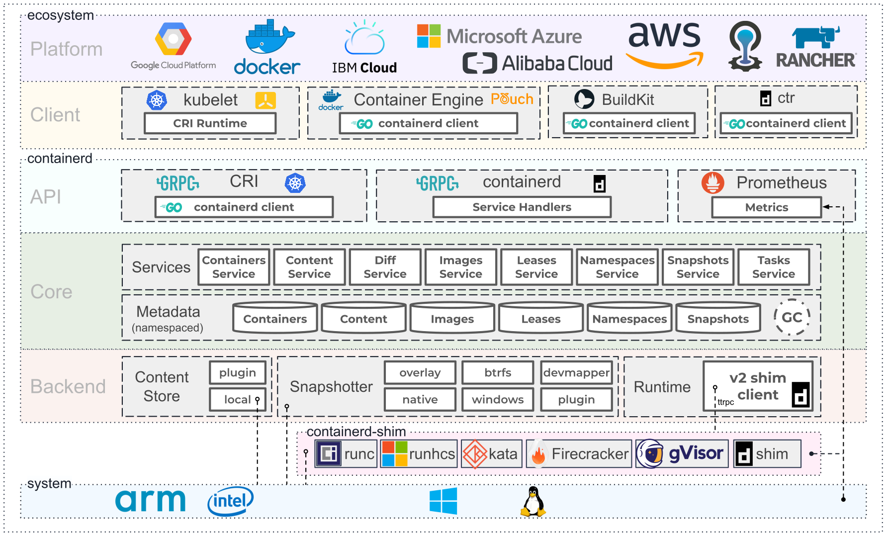

- 00 为什么我们要学习 Kubernetes 技术.md
- 01 重新认识 Kubernetes 的核心组件.md
- 02 深入理解 Kubernets 的编排对象.md
- 03 DevOps 场景下落地 K8s 的困难分析.md
- 04 微服务应用场景下落地 K8s 的困难分析.md
- 05 解决 K8s 落地难题的方法论提炼.md
- 06 练习篇：K8s 核心实践知识掌握.md
- 07 容器引擎 containerd 落地实践.md
- 08 K8s 集群安装工具 kubeadm 的落地实践.md
- 09 南北向流量组件 IPVS 的落地实践.md
- 10 东西向流量组件 Calico 的落地实践.md
- 11 服务发现 DNS 的落地实践.md
- 12 练习篇：K8s 集群配置测验.md
- 13 理解对方暴露服务的对象 Ingress 和 Service.md
- 14 应用网关 OpenResty 对接 K8s 实践.md
- 15 Service 层引流技术实践.md
- 16 Cilium 容器网络的落地实践.md
- 17 应用流量的优雅无损切换实践.md
- 18 练习篇：应用流量无损切换技术测验.md
- 19 使用 Rook 构建生产可用存储环境实践.md
- 20 有状态应用的默认特性落地分析.md
- 21 案例：分布式 MySQL 集群工具 Vitess 实践分析.md
- 22 存储对象 PV、PVC、Storage Classes 的管理落地实践.md
- 23 K8s 集群中存储对象灾备的落地实践.md
- 24 练习篇：K8s 集群配置测验.md
07 容器引擎 containerd 落地实践
Docker 公司从 2013 年发布容器引擎 Docker 后，就被全球开发者使用并不断改进它的功能。随着容器标准的建立，Docker 引擎架构也从单体走向微服务结构，剥离出 dontainerd 引擎。它在整个容器技术架构中的位置如下：

图 6-1 containerd 架构图，版权源自 https://containerd.io/
containerd 使用初体验
从官方仓库可以下载最新的 containerd 可执行文件，因为依赖 runc，所以需要一并下载才能正常使用：
# 下载 containerd 二进制文件
wget -q --show-progress --https-only --timestamping \
https://github.com/opencontainers/runc/releases/download/v1.0.0-rc10/runc.amd64 \
https://github.com/containerd/containerd/releases/download/v1.3.4/containerd-1.3.4.linux-amd64.tar.gz \
https://github.com/kubernetes-sigs/cri-tools/releases/download/v1.18.0/crictl-v1.18.0-linux-amd64.tar.gz
sudo mv runc.amd64 runc
# 安装二进制文件
tar -xvf crictl-v1.18.0-linux-amd64.tar.gz
chmod +x crictl runc
sudo cp crictl runc /usr/local/bin/
mkdir containerd
tar -xvf containerd-1.3.4.linux-amd64.tar.gz -C containerd
sudo cp containerd/bin/* /bin/
containerd 提供了默认的配置文件 config.toml，默认放在 /etc/containerd/config.toml：
[plugins]
[plugins.cri.containerd]
snapshotter = "overlayfs"
[plugins.cri.containerd.default_runtime]
runtime_type = "io.containerd.runtime.v1.linux"
runtime_engine = "/usr/local/bin/runc"
runtime_root = ""
containerd 服务一般采用后台守护进程方式运行，在 Linux 中使用 systemd 运行：
# 配置 containerd.service
sudo cat <<EOF | sudo tee /etc/systemd/system/containerd.service
[Unit]
Description=containerd container runtime
Documentation=https://containerd.io
After=network.target
[Service]
ExecStartPre=/sbin/modprobe overlay
ExecStart=/bin/containerd
Restart=always
RestartSec=5
Delegate=yes
KillMode=process
OOMScoreAdjust=-999
LimitNOFILE=1048576
LimitNPROC=infinity
LimitCORE=infinity
[Install]
WantedBy=multi-user.target
EOF
#启动
sudo systemctl daemon-reload
sudo systemctl enable containerd
sudo systemctl start containerd
#配置 crictl 客户端
sudo crictl config runtime-endpoint unix:///var/run/containerd/containerd.sock
至此，containerd 的使用流程就体验完成了。
通过客户端深入了解 containerd
containerd 启动后，我们需要使用客户端命令行工具来了解下容器运行的情况。这个时候，我们手上有 2 个工具可以使用。一个是 crictl 这个是 Kubernetes 社区提供的操作容器接口标准的客户端工具，另外一个是 ctr 这是 containerd 自带的客户端工具，ctr 是测试使用的工具，在日常工作中推荐使用 crictl 工具来管理容器。
ctr 工具运行如下：
ctr -
__
_____/ /______
/ ___/ __/ ___/
/ /__/ /_/ /
\___/\__/_/
containerd CLI
USAGE:
ctr [global options] command [command options] [arguments...]
VERSION:
v1.3.4
DESCRIPTION:
ctr is an unsupported debug and administrative client for interacting
with the containerd daemon. Because it is unsupported, the commands,
options, and operations are not guaranteed to be backward compatible or
stable from release to release of the containerd project.
COMMANDS:
plugins, plugin provides information about containerd plugins
version print the client and server versions
containers, c, container manage containers
content manage content
events, event display containerd events
images, image, i manage images
leases manage leases
namespaces, namespace, ns manage namespaces
pprof provide golang pprof outputs for containerd
run run a container
snapshots, snapshot manage snapshots
tasks, t, task manage tasks
install install a new package
shim interact with a shim directly
help, h Shows a list of commands or help for one command
GLOBAL OPTIONS:
--debug enable debug output in logs
--address value, -a value address for containerd's GRPC server (default: "/run/contai
nerd/containerd.sock")
--timeout value total timeout for ctr commands (default: 0s)
--connect-timeout value timeout for connecting to containerd (default: 0s)
--namespace value, -n value namespace to use with commands (default: "default") [$CONTA
INERD_NAMESPACE]
--help, -h show help
--version, -v print the version
crictl 运行命令如下：
NAME:
crictl - client for CRI
USAGE:
crictl [global options] command [command options] [arguments...]
VERSION:
v1.18.0
COMMANDS:
attach Attach to a running container
create Create a new container
exec Run a command in a running container
version Display runtime version information
images, image, img List images
inspect Display the status of one or more containers
inspecti Return the status of one or more images
imagefsinfo Return image filesystem info
inspectp Display the status of one or more pods
logs Fetch the logs of a container
port-forward Forward local port to a pod
ps List containers
pull Pull an image from a registry
run Run a new container inside a sandbox
runp Run a new pod
rm Remove one or more containers
rmi Remove one or more images
rmp Remove one or more pods
pods List pods
start Start one or more created containers
info Display information of the container runtime
stop Stop one or more running containers
stopp Stop one or more running pods
update Update one or more running containers
config Get and set crictl options
inspecti Return the status of one or more images
imagefsinfo Return image filesystem info
inspectp Display the status of one or more pods
logs Fetch the logs of a container
port-forward Forward local port to a pod
ps List containers
pull Pull an image from a registry
run Run a new container inside a sandbox
runp Run a new pod
rm Remove one or more containers
rmi Remove one or more images
rmp Remove one or more pods
pods List pods
start Start one or more created containers
info Display information of the container runtime
stop Stop one or more running containers
stopp Stop one or more running pods
update Update one or more running containers
config Get and set crictl options
stats List container(s) resource usage statistics
completion Output shell completion code
help, h Shows a list of commands or help for one command
GLOBAL OPTIONS:
--config value, -c value Location of the client config file. If not specified
and the default does not exist, the program's directory is searched as well (default: "/et
c/crictl.yaml") [$CRI_CONFIG_FILE]
--debug, -D Enable debug mode (default: false)
--image-endpoint value, -i value Endpoint of CRI image manager service [$IMAGE_SERVIC
E_ENDPOINT]
--runtime-endpoint value, -r value Endpoint of CRI container runtime service (default:
"unix:///var/run/dockershim.sock") [$CONTAINER_RUNTIME_ENDPOINT]
--timeout value, -t value Timeout of connecting to the server (default: 2s)
--help, -h show help (default: false)
--version, -v print the version (default: false)
从 2 个命令参数对比参照可以得知，crictl 的功能是比 ctr 要丰富很多的。为了日常使用方便，这里我把 crictl 和 Docker 命令做一个对比，方便大家参照使用：
| 镜像相关功能 | Docker | Containerd |
|---|---|---|
| 显示本地镜像列表 | docker images | crictl images |
| 下载镜像 | docker pull | crictl pull |
| 上传镜像 | docker push | 无 |
| 删除本地镜像 | docker rmi | crictl rmi |
| 查看镜像详情 | docker inspect IMAGE-ID | crictl inspecti IMAGE-ID |
注意：上传镜像功能属于和镜像仓库服务的交互，crictl 没有提供此功能可以减轻不少代码逻辑负担。
| 容器相关功能 | Docker | Containerd |
|---|---|---|
| 显示容器列表 | docker ps | crictl ps |
| 创建容器 | docker create | crictl create |
| 启动容器 | docker start | crictl start |
| 停止容器 | docker stop | crictl stop |
| 删除容器 | docker rm | crictl rm |
| 查看容器详情 | docker inspect | crictl inspect |
| attach | docker attach | crictl attach |
| exec | docker exec | crictl exec |
| logs | docker logs | crictl logs |
| stats | docker stats | crictl stats |
看到以上清单，cotnainerd 和 Docker 的功能是一脉相承。因此在生产环境使用 containerd 可以减少很多调用依赖。
Docker 作为 K8s 容器运行时，调用关系如下：
kubelet --> docker shim （在 kubelet 进程中） --> dockerd --> containerd
Containerd 作为 K8s 容器运行时，调用关系如下：
kubelet --> cri plugin（在 containerd 进程中） --> containerd
dockerd 是 Docker 原生容器应用引擎提供的代理服务，内置了 swarm cluster、docker build、docker push、docker api 等扩展功能，但是在生产环境默认都是 Kubernetes 集群环境，所以这块的功能可以直接去掉。
对于 Docker 容器日志、网络配置
日志对比
| 对比项 | Docker | Containerd |
|---|---|---|
| 存储路径 | 如果 Docker 作为 Kubernetes 容器运行时，容器日志的落盘将由 docker 来完成，保存在类似/var/lib/docker/containers/$CONTAINERID 目录下。Kubelet 会在 /var/log/pods 和 /var/log/containers 下面建立软链接，指向 /var/lib/docker/containers/$CONTAINERID 该目录下的容器日志文件。 |
如果 Containerd 作为 Kubernetes 容器运行时， 容器日志的落盘由 Kubelet 来完成，保存至 /var/log/pods/$CONTAINER_NAME 目录下，同时在 /var/log/containers 目录下创建软链接，指向日志文件。 |
CNI 网络对比
| 对比项 | Docker | Containerd |
|---|---|---|
| 谁负责调用 CNI | Kubelet 内部的 docker-shim | Containerd 内置的 cri-plugin（containerd 1.1 以后） |
| 如何配置 CNI | Kubelet 参数 --cni-bin-dir 和 --cni-conf-dir |
Containerd 配置文件（toml）： [plugins.cri.cni]、bin_dir = "/opt/cni/bin"、conf_dir = "/etc/cni/net.d" |
总结
containerd 是 Docker 容器落地实践过程中标准化的产物，经过了全球无数企业应用场景的锤炼。所以它的稳定性是值得开发者信赖的工具。虽然当前业界对 Docker 公司的产品采取回避策略，但是 containerd 是当前最佳的生产环境的容器引擎，值得继续关注场景的使用和支持。
© 2019 - 2023 Liangliang Lee. Powered by gin and hexo-theme-book.